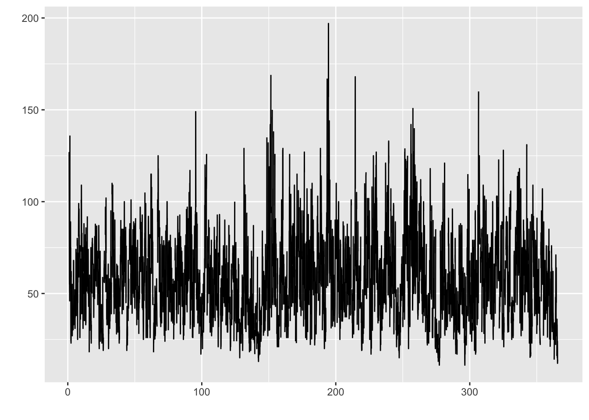
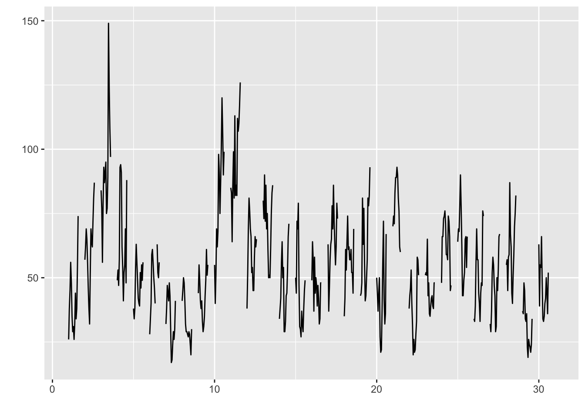
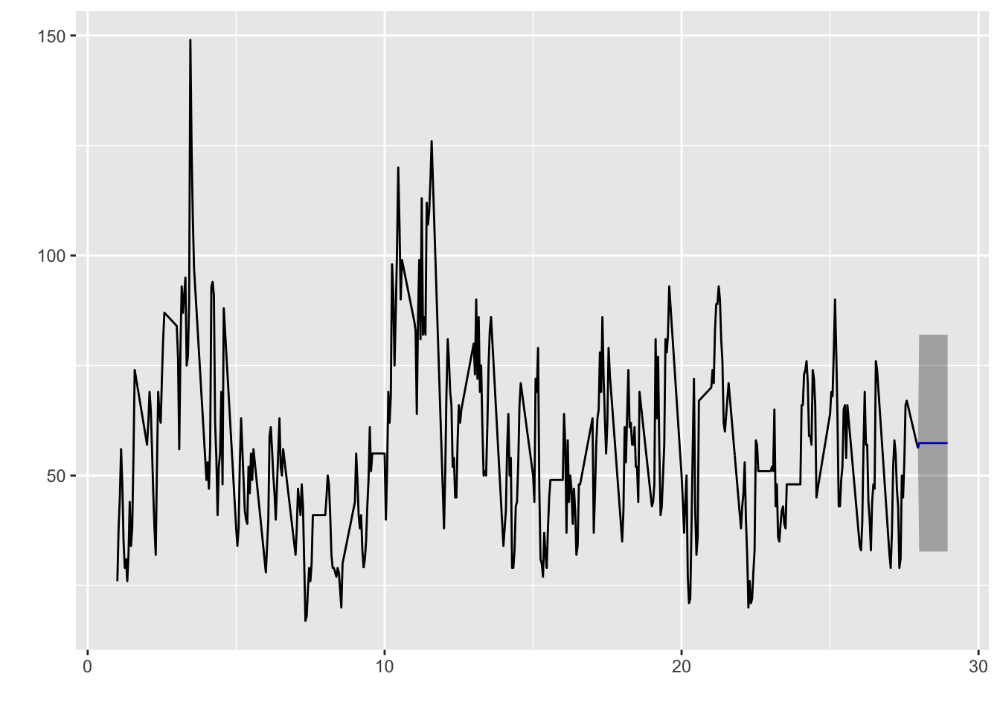
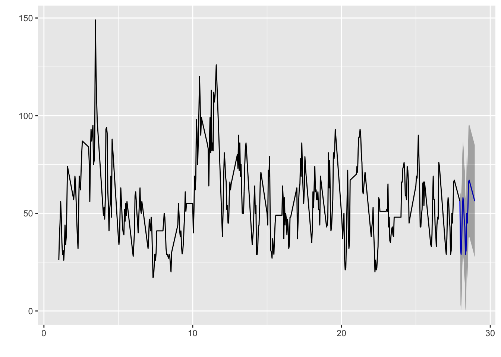
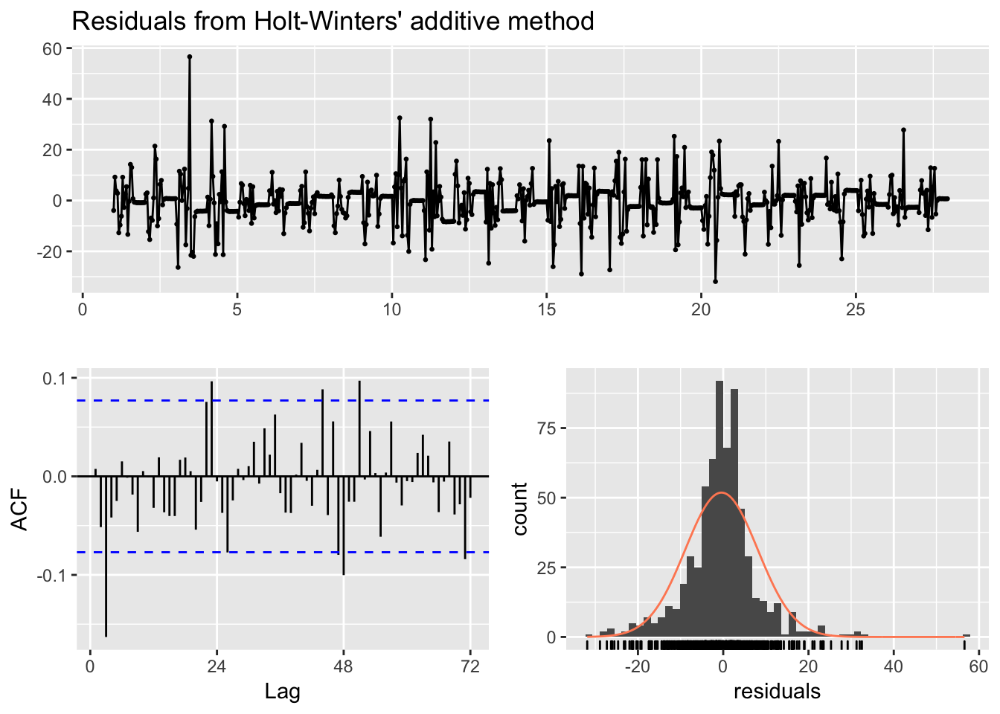
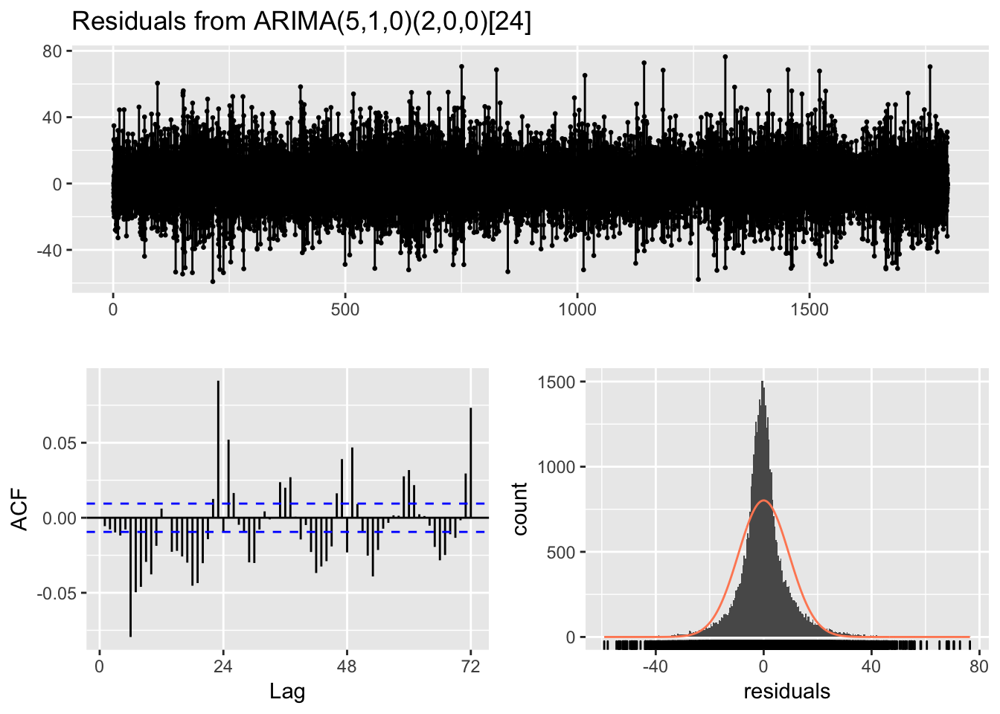
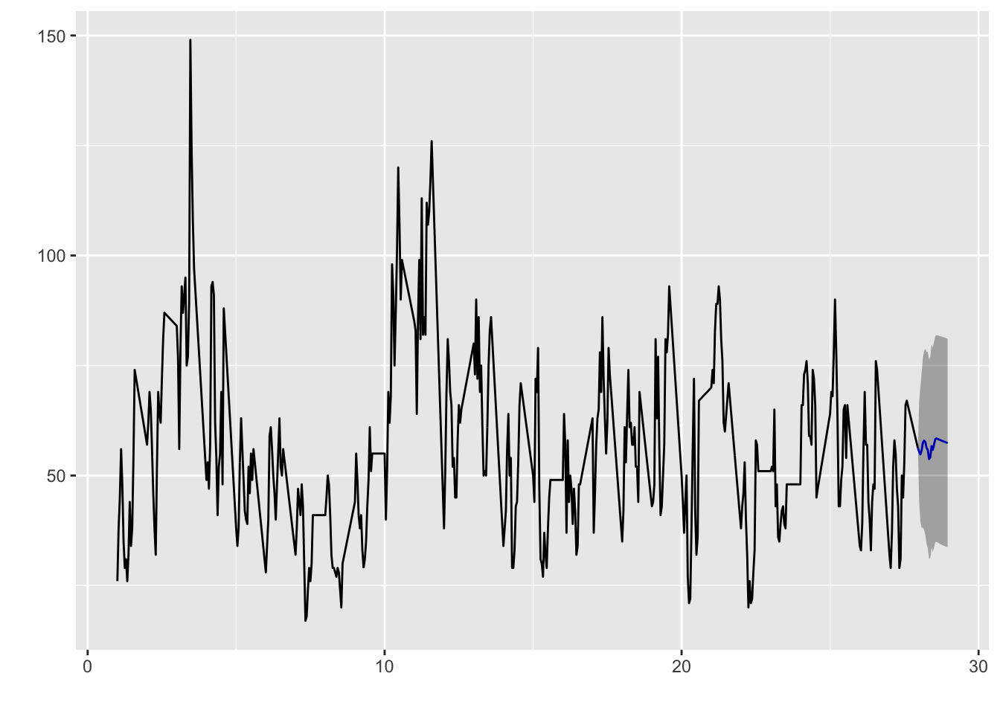
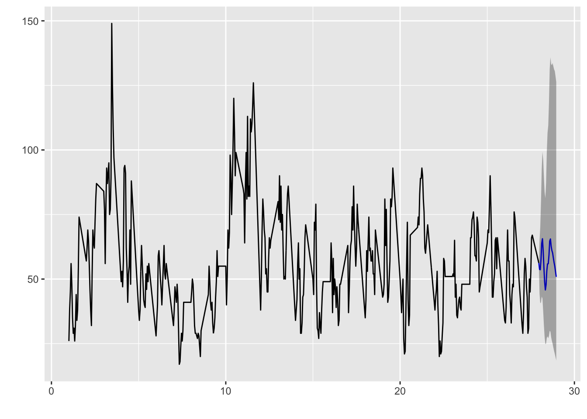

Chapter 4 Forecasting
To predict pollution values is essential for local government, environmental or health agencies, to be able to anticipate and establish procedures to reduce the severity of local pollution levels.
But it’s also helpful for citizens because forecasting helps people plan ahead, and be able to decrease the effects on health and the costs associated.
As we have seen, air pollution levels are strongly correlated with local weather conditions and nearby pollution emissions.However, long-range transport of pollution - through strong winds - is also a significant influencing factor and must be taken into consideration when forecasting local readings.
Predicting air quality, therefore, not only involves the difficulties of weather forecasting, it also requires data on and knowledge of:
- Local pollutant concentrations and emissions
- Pollutant concentrations and emissions from distant locations
- Movements and possible transformations of pollutants
- Prevailing winds
So forecasting pollution is much more complex than predicting the weather, but it’s vital and I will try to analyze and implement.
For forecasting I am going to focus in Eixample, and pollutant NO2 only. I will generate 3 different training sets: - Data for 4 years from 2014 to 2018. - Data for 1 year from 2018. - Data for 1 month of 2018, September.
Please load files “Eixample_NO2_2014_2018.csv”, “Eixample_NO2_2018.csv”, and “Eixample_NO2_2018_09.csv”. You can find the R script here
library(readr)
library(dplyr)
library(tidyr)
library(purrr)
library(lubridate)
library(ggplot2)
library(stringr)
library(knitr)
library(xts)
library(zoo)
library(gridExtra)
library(fpp2)
library(RcppRoll)
library(kableExtra)
library(imputeTS)
library(ggfortify)
library(urca)
library(forecast)
Eixample_NO2_2014_2018 <- read_csv('/Users/ione/Desktop/Project_AIR/data/Eixample_NO2_2014_2018.csv')
Eixample_NO2_2018 <- read_csv('/Users/ione/Desktop/Project_AIR/data/Eixample_NO2_2018.csv')
Eixample_NO2_2018_09 <- read_csv('/Users/ione/Desktop/Project_AIR/data/Eixample_NO2_2018_09.csv')I am going to transform the dataframes into ts time series objects:
Eixample_NO2_ts <- ts(Eixample_NO2_2014_2018[,10], frequency = 24)
Eixample_NO2_2018_ts <- ts(Eixample_NO2_2018[,10], frequency = 24)
Eixample_NO2_2018_09_ts <- ts(Eixample_NO2_2018_09[,10], frequency = 24)I am going to plot each time series now to see how they look:
autoplot(Eixample_NO2_ts)
autoplot(Eixample_NO2_2018_ts)
autoplot(Eixample_NO2_2018_09_ts)
I am going to input NA values by using interpolation method:
imp_2014_2018_NO2_Eixample_intp <- na.interpolation(Eixample_NO2_ts)
imp_2018_NO2_Eixample_intp <- na.interpolation(Eixample_NO2_2018_ts)
imp_2018_09_NO2_Eixample_intp <- na.interpolation(Eixample_NO2_2018_09_ts)I’m going to plot one time series with the na interpolations:
plotNA.imputations(x.withNA = Eixample_NO2_2018_09_ts, x.withImputations = imp_2018_09_NO2_Eixample_intp)
Decomposition of an additive times series for the month long period:
Eixample_NO2_Comp <- decompose(imp_2018_09_NO2_Eixample_intp)
plot(Eixample_NO2_Comp)
We observe the daily seasonality in the decomposition.
Also I can see the trend, seasonality, and what is the autocorrelation level or the linear relationship between lagged values of our time series.
I will plot the autocorrelation coefficients or a correlogram to show the autocorrelation function or ACF.
ggAcf(imp_2014_2018_NO2_Eixample_intp)
We observe that we have at least a daily seasonality with peaks in lag=24 and multiples. We also have a trend, because the autocorrelations for small lags are large and positive, and observations nearby in time are similar size that decrease as the lags increase. The lags decrease because of the trend, and they have a “scalloped” shape due to the seasonality, in lag=24 and multiples.
To evaluate the model, I am going to generate 3 training sets, and see what works best.
Train1: 2014-01 to 2018-11, Test: 2018-12 Train2: 2018-01 to 2018-11, Test: 2018-12 Train3: 2018-09-1 to 2018-09-27, Test: 2018-09-28 to 2018-09-30
train1 <- subset(imp_2014_2018_NO2_Eixample_intp, end=length(imp_2014_2018_NO2_Eixample_intp)-31*24)
train2 <- subset(imp_2018_NO2_Eixample_intp, end = length(imp_2018_NO2_Eixample_intp) - 31*24)
train3 <- subset(imp_2018_09_NO2_Eixample_intp, end = length(imp_2018_09_NO2_Eixample_intp) - 3*24)I am going to create a very simple baseline with some simple forecasting methods like naive, seasonal naive, and average methods, and we are going to compare them.
I will first create a very basic model using the average method.
For train1 dataset, with 4 year data, we are going to try forecasting 24 h.
fcavg1 <- meanf(train1, h=24)checkresiduals(fcavg1)
##
## Ljung-Box test
##
## data: Residuals from Mean
## Q* = 286600, df = 47, p-value < 2.2e-16
##
## Model df: 1. Total lags used: 48The residuals seem to be strongly correlated and the mean is not zero, so there is a lot of room for improvement.
acavg1 <- accuracy(fcavg1,imp_2014_2018_NO2_Eixample_intp)
acavg1## ME RMSE MAE MPE MAPE MASE
## Training set -2.422543e-15 23.41828 18.52812 -17.83864 38.20774 0.9465105
## Test set 8.878874e+00 14.60153 11.09775 10.51279 14.78259 0.5669293
## ACF1 Theil's U
## Training set 0.914165 NA
## Test set 0.761984 1.464202I will create the average model for the other two training sets:
fcavg2 <- meanf(train2, h=24)
acavg2 <- accuracy(fcavg2,imp_2018_NO2_Eixample_intp)
acavg2## ME RMSE MAE MPE MAPE MASE
## Training set 9.083770e-16 22.69295 18.01841 -17.26566 37.58413 0.9096043
## Test set 2.547705e+01 33.06056 29.48470 24.23142 32.86620 1.4884445
## ACF1 Theil's U
## Training set 0.9048683 NA
## Test set 0.8842593 2.486766fcavg3 <- meanf(train3, h=24)
acavg3 <- accuracy(fcavg3,imp_2018_09_NO2_Eixample_intp)
acavg3## ME RMSE MAE MPE MAPE MASE
## Training set 1.786583e-15 19.16832 15.04658 -12.1881287 30.19554 0.9039163
## Test set 2.898148e+00 12.92619 10.29205 0.4973661 17.13705 0.6182901
## ACF1 Theil's U
## Training set 0.8797162 NA
## Test set 0.6311693 1.24153autoplot(fcavg3)
The best model so far is fcavg3 with RMSE 12.92, but it can be surely improved,so I will now try the Seasonal Naïve METHOD.
fcsn1 <- snaive(train1, h = 24)
acsnm1 <- accuracy(fcsn1,imp_2014_2018_NO2_Eixample_intp)
acsnm1## ME RMSE MAE MPE MAPE MASE
## Training set -0.007520891 25.62021 19.57519 -10.65701 37.41261 1.000000
## Test set -7.437500000 28.88746 24.85417 -16.72899 37.18899 1.269677
## ACF1 Theil's U
## Training set 0.8823099 NA
## Test set 0.8019205 3.637674fcsn2 <- snaive(train2, h = 24)
acsnm2 <- accuracy(fcsn2,imp_2018_NO2_Eixample_intp)
acsnm2## ME RMSE MAE MPE MAPE MASE
## Training set -0.05061311 25.99450 19.80907 -10.846521 38.01660 1.000000
## Test set 11.56250000 24.75265 21.56250 6.647138 27.10735 1.088517
## ACF1 Theil's U
## Training set 0.8772091 NA
## Test set 0.8161219 2.257468fcsn3 <- snaive(train3, h = 24)
acsnm3 <- accuracy(fcsn3,imp_2018_09_NO2_Eixample_intp)
acsnm3## ME RMSE MAE MPE MAPE MASE
## Training set 0.06971154 22.40050 16.64599 -7.896603 31.45541 1.0000000
## Test set 8.47916667 14.39133 11.85417 12.677672 19.96869 0.7121333
## ACF1 Theil's U
## Training set 0.8489884 NA
## Test set 0.5685643 1.337942autoplot(fcsn3)
It seems that the Seasonal Naive Method has not improved much the mean method, as so far the best model has been the mean model fcavg3 with 1 month training set (train3) with RMSE of 12.92.
I am now going to try some exponential smoothing forecasting methods. Forecasts produced using exponential smoothing methods are weighted averages of past observations, with the weights decaying exponentially as the observations get older. The more recent the observation, the higher the associated weight.
The Holt-Winters seasonal method comprises the forecast equation and three smoothing equations — one for the level ℓt, one for the trend bt, and one for the seasonal component st, with corresponding smoothing parameters α, β∗ and γ. We use m to denote the frequency of the seasonality, i.e., the number of seasons in a year.
fhw1 <- hw(train1, seasonal = "additive", h = 24)Check that the residuals look like white noise
checkresiduals(fhw1)
##
## Ljung-Box test
##
## data: Residuals from Holt-Winters' additive method
## Q* = 3918.2, df = 20, p-value < 2.2e-16
##
## Model df: 28. Total lags used: 48Calculate the accuracy of the model
achw1 <- accuracy(fhw1, imp_2014_2018_NO2_Eixample_intp)
achw1## ME RMSE MAE MPE MAPE MASE
## Training set 0.08692546 9.565536 6.566569 -1.258247 12.18857 0.3354537
## Test set -6.45561654 12.456080 10.417207 -10.823803 15.88906 0.5321638
## ACF1 Theil's U
## Training set 0.1105364 NA
## Test set 0.7773539 1.593672I will do the same for the training period 2 (for whole year 2018)
fhw2 <- hw(train2, seasonal = "additive", h = 24)achw2 <- accuracy(fhw2, imp_2018_NO2_Eixample_intp)
achw2## ME RMSE MAE MPE MAPE MASE
## Training set 0.1352854 9.345555 6.14209 -1.093629 11.29442 0.3100646
## Test set -1.8618327 17.345534 14.38008 -9.296462 21.50013 0.7259340
## ACF1 Theil's U
## Training set 0.008890979 NA
## Test set 0.887359709 2.104266I will do the same for the training period 3 (for september 2018)
fhw3 <- hw(train3, seasonal = "additive", h = 24)autoplot(fhw3)
checkresiduals(fhw3)
##
## Ljung-Box test
##
## data: Residuals from Holt-Winters' additive method
## Q* = 74.873, df = 20, p-value = 2.861e-08
##
## Model df: 28. Total lags used: 48achw3 <- accuracy(fhw3, imp_2018_09_NO2_Eixample_intp)
achw3## ME RMSE MAE MPE MAPE MASE
## Training set -0.4031084 8.491798 5.760773 -1.976917 10.81360 0.3460756
## Test set -3.5367808 9.931202 8.256685 -9.041486 15.23381 0.4960163
## ACF1 Theil's U
## Training set 0.007553314 NA
## Test set 0.401247312 1.104942With Holt-Winters seasonal additive method, we get the best RMSE = 9.93 so far, with train set 3 (September 2018). The residuals look like white noise, with small autocorrelation coefficients under 0.1 and with mean centered in 0.
Exponential smoothing methods can have multiple variations depending of the combinations of the trend and seasonality being additive or multiplicative. So Seasonal Holt-Winders is an additive trend and additive seasonal method, but for example I could have a (A,M) method, which would have a additive trend and multiplicative seasonality.
Also a model can have an additive or multiplicative error, adding a third parameter to the exponential smoothing methods, the error. They are called also ETS, for error, trend and seasonality. The possibilities for each component are: Error ={A,M}, Trend ={N,A,Ad} and Seasonal ={N,A,M}.
I wil use the ETS method to forecast our time series:
fitets1 <- ets(train1)
e1 <- fitets1 %>% forecast(h = 24) %>% accuracy(imp_2014_2018_NO2_Eixample_intp)
e1## ME RMSE MAE MPE MAPE MASE
## Training set -0.0876561 9.77353 6.607668 -1.621631 11.86540 0.3375532
## Test set -11.5514832 17.08266 13.978419 -18.195275 21.49077 0.7140886
## ACF1 Theil's U
## Training set 0.1423023 NA
## Test set 0.7927134 2.196444With 4 years training, it returns an ETS(M,N,M) model with no white noise(p-value < 2.2e-16) and RMSE = 17.08266.
fitets2 <- ets(train2)
e2 <- fitets2 %>% forecast(h = 24) %>% accuracy(imp_2018_NO2_Eixample_intp)
e2## ME RMSE MAE MPE MAPE MASE
## Training set 0.002282833 9.395696 6.188579 -1.385050 11.37992 0.3124114
## Test set -1.286698541 17.324459 14.446887 -8.612021 21.53933 0.7293068
## ACF1 Theil's U
## Training set 0.01930377 NA
## Test set 0.88231930 2.099396With 11 months training, it returns an ETS(M,N,A) model with no white noise (p-value < 2.2e-16) and RMSE = 18.213865.
fitets3 <- ets(train3)
fitets3 %>% forecast(h = 24) %>% autoplot()
summary(fitets3)## ETS(M,Ad,M)
##
## Call:
## ets(y = train3)
##
## Smoothing parameters:
## alpha = 0.8487
## beta = 1e-04
## gamma = 2e-04
## phi = 0.9799
##
## Initial states:
## l = 36.9071
## b = 1.0543
## s = 0.8994 0.9476 0.9705 0.9927 1.025 1.0601
## 1.0669 1.109 1.1557 1.2327 1.0738 1.0313 0.9797 0.9651 0.8508 0.819 0.8417 0.9776 1.0493 1.1546 1.1029 0.9667 0.8884 0.8395
##
## sigma: 0.1586
##
## AIC AICc BIC
## 7018.535 7021.549 7152.751
##
## Training set error measures:
## ME RMSE MAE MPE MAPE MASE
## Training set -0.04703844 8.779863 5.954116 -1.439148 10.9715 0.3576907
## ACF1
## Training set 0.05729307e3 <- fitets3 %>% forecast(h = 24) %>% accuracy(imp_2018_09_NO2_Eixample_intp)
e3## ME RMSE MAE MPE MAPE MASE
## Training set -0.04703844 8.779863 5.954116 -1.439148 10.97150 0.3576907
## Test set -1.93475890 9.452193 8.034722 -6.176874 14.46853 0.4826820
## ACF1 Theil's U
## Training set 0.05729307 NA
## Test set 0.40502783 1.025611With one month training, it returns an ETS(M, Ad, M) model with no white noise (p-value = 7.387e-10) and RMSE = 9.452193
Still, for some reason the forecast plot doesn’t look too good, I wonder if the time series is stationary or white noise and don’t have a predictable patter in the long term.
I will perform the Kwiatkowski-Phillips-Schmidt-Shin (KPSS) test (Kwiatkowski, Phillips, Schmidt, & Shin, 1992). In this test, the null hypothesis is that the data are stationary, and we look for evidence that the null hypothesis is false. Consequently, small p-values (e.g., less than 0.05) suggest that differencing is required.
train1 %>% ur.kpss() %>% summary()##
## #######################
## # KPSS Unit Root Test #
## #######################
##
## Test is of type: mu with 18 lags.
##
## Value of test-statistic is: 1.9162
##
## Critical value for a significance level of:
## 10pct 5pct 2.5pct 1pct
## critical values 0.347 0.463 0.574 0.739Value of test-statistic is: 1.9162 so we can discard that it’s a stationary time series.
We can transform non-stationary to stationary by computing the differences between consecutive observations, and stabilising the variance of the time series. Differencing can help stabilise the mean of a time series by removing changes in the level of a time series, and therefore eliminating (or reducing) trend and seasonality.
I will apply a seasonal ARIMA model next to our training sets. The seasonal ARIMA models have two sets of parameters (p,d,q)(P,D,Q), p related to the order of the autorregression or AR part, d if differencing is required and q to the order of the moving average part. P,D,Q are referring to the seasonal part of the model.
I will use the autorima function to see what kind of model is best:
fitautoarima1 <- auto.arima(train1)
checkresiduals(fitautoarima1)
##
## Ljung-Box test
##
## data: Residuals from ARIMA(5,1,0)(2,0,0)[24]
## Q* = 1877.1, df = 41, p-value < 2.2e-16
##
## Model df: 7. Total lags used: 48a1 <- fitautoarima1 %>% forecast(h = 24) %>% accuracy(imp_2014_2018_NO2_Eixample_intp)
a1## ME RMSE MAE MPE MAPE
## Training set -7.712129e-04 9.407624 6.288977 -1.604437 11.39849
## Test set -1.422385e+01 18.928269 16.284145 -24.258515 26.54918
## MASE ACF1 Theil's U
## Training set 0.3212729 -0.005603022 NA
## Test set 0.8318769 0.785648127 2.580245The proposed model parameters are ARIMA(5,1,0)(2,0,0)[24], so it proposes 1 differencing in the non-seasonal part of the mdel, and the order of the moving average is 0 in both parts. The autoregression order of the non-seasonal is 5, and the AR order of the seasonal 2.
The RMSE is 18.928269, which is higher than ETS models tried before.
fitautoarima2 <- auto.arima(train2)
a2 <- fitautoarima2 %>% forecast(h = 24) %>% accuracy(imp_2018_NO2_Eixample_intp)
a2## ME RMSE MAE MPE MAPE MASE
## Training set -0.002544305 9.456613 6.240959 -2.874205 11.67962 0.3150557
## Test set 16.194115132 27.989931 23.433718 12.080689 27.47259 1.1829794
## ACF1 Theil's U
## Training set 6.401545e-05 NA
## Test set 8.965193e-01 2.270977With training set 2, the model proposed is an ARIMA(1,0,1)(2,0,0)[24]. No differencing was required, and the AR is 1 in the non-seasonal part, 2 in the seasonal part. It has included one order of the MA part. The RMSE=27.99 is very high, so it doesn’t look like a good model.
I will finish with the training set 3, which is for the month of september 2018.
fitautoarima3 <- auto.arima(train3)
summary(fitautoarima3)## Series: train3
## ARIMA(1,0,0)(0,0,1)[24] with non-zero mean
##
## Coefficients:
## ar1 sma1 mean
## 0.8750 0.1487 57.0521
## s.e. 0.0191 0.0380 3.1789
##
## sigma^2 estimated as 80.31: log likelihood=-2340.01
## AIC=4688.02 AICc=4688.08 BIC=4705.91
##
## Training set error measures:
## ME RMSE MAE MPE MAPE MASE
## Training set 0.06438725 8.940968 6.024999 -2.479659 11.34568 0.3619489
## ACF1
## Training set 0.01792237fitautoarima3 %>% forecast(h=24) %>% autoplot()
a3 <- fitautoarima3 %>% forecast(h = 24) %>% accuracy(imp_2018_09_NO2_Eixample_intp)
a3## ME RMSE MAE MPE MAPE MASE
## Training set 0.06438725 8.940968 6.024999 -2.479659 11.34568 0.3619489
## Test set 3.36878022 12.348736 9.861870 1.601082 16.22775 0.5924471
## ACF1 Theil's U
## Training set 0.01792237 NA
## Test set 0.61470284 1.177736For a training period of one month, the ARIMA(1,0,0)(0,0,1)[24] is chosen. Just one order of the AR non seasonal part, and one order of the MA seasonal part. The error RMSE= 12.34 seems to improve the other ARIMA models but it’s still worse than the ETS model.
This is not the result I was expecting and my hypothesis is that the times series have a multiple seasonality. With pollution data, we have a case of multiple seasonality with daily, weekly and yearly seasons. To deal with these maybe I should adapt my models to different training sets to avoid multiple seasonalities. If the time series is relatively short so that only one type of seasonality is present, then maybe it will be possible to use one of the single-seasonal methods like ETS or a seasonal ARIMA model.
But when the time series is long enough so that multiple seasonal periods appear, it will be necessary to use STL, dynamic harmonic regression or TBATS.
I am going to try the TBATS model, which is an automated method that uses a combination of Fourier terms with an exponential smoothing state space model and a Box-Cox transformation, in a completely automated manner.
train1 %>% tbats() -> fit_tbats
summary(fit_tbats)## Length Class Mode
## lambda 1 -none- numeric
## alpha 1 -none- numeric
## beta 1 -none- numeric
## damping.parameter 1 -none- numeric
## gamma.one.values 1 -none- numeric
## gamma.two.values 1 -none- numeric
## ar.coefficients 3 -none- numeric
## ma.coefficients 1 -none- numeric
## likelihood 1 -none- numeric
## optim.return.code 1 -none- numeric
## variance 1 -none- numeric
## AIC 1 -none- numeric
## parameters 2 -none- list
## seed.states 28 -none- numeric
## fitted.values 43104 ts numeric
## errors 43104 ts numeric
## x 1206912 -none- numeric
## seasonal.periods 1 -none- numeric
## k.vector 1 -none- numeric
## y 43104 ts numeric
## p 1 -none- numeric
## q 1 -none- numeric
## call 2 -none- call
## series 1 -none- character
## method 1 -none- characterIt’s interesting because the TBATS model returns a model TBATS(0.3, {3,1}, 0.904, {<24,11>}), which it only includes 1 seasonality of 24 hours, and I know there are at least a weekly and a yearly seasonality.Box-Cox parameter is 0.3, and the damping parameter 0.904. It’s a order 3 for AR and 1 for MA part.
train3 %>% tbats() -> fit_tbats3
fc3 <- forecast(fit_tbats3, h=24)
autoplot(fc3)
acctbats3 <- accuracy(fc3,imp_2018_09_NO2_Eixample_intp)
acctbats3## ME RMSE MAE MPE MAPE MASE
## Training set 0.4618859 8.560919 5.939985 -0.9305555 10.85752 0.3568417
## Test set 3.4389851 10.318737 8.345038 2.8415146 13.33396 0.5013241
## ACF1 Theil's U
## Training set -0.03884427 NA
## Test set 0.50384759 0.9649302The TBATS model resulted with training period of one month is a TBATS(0.113, {0,0}, 0.8, {24,7}), with just one seasonality of 24 hours, no AR or MA component, and significant 0.113 Cox-Box transformation component, with 0.8 damping parameter. The RMSE is 10.31, which is worse than the one I got with ETS(M, Ad, M) model, with RMSE = 9.452193.